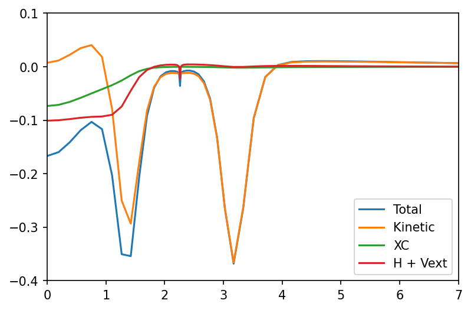
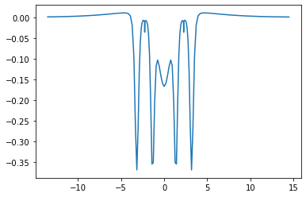
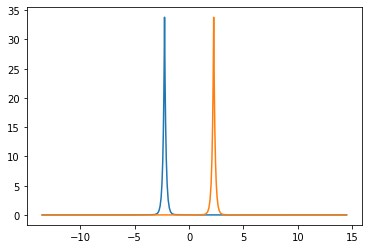

Be2 PDFT Inversion - WuYang¶
[4]:
import numpy as np
import matplotlib.pyplot as plt
from CADMium import Pssolver, Psgrid, Partition, Inverter
[5]:
a = 4.522/2
#Nuclear charge for fragments A and B
Za, Zb = 4,4
#Set polarization 1-Unpolarized, 2-Polarized
pol = 1
#Fragment a electrons [alpha, beta]
Nmo_a = [[2]] #Number of molecular orbitals to calculate
N_a = [[4]]
#Ensemble mix
nu_a = 1
#Fragment b electrons
Nmo_b = [[2]]
N_b = [[4]]
#Ensemble mix
nu_b = 1
#Molecular elctron configuration
Nmo_m = [[4]]
N_m = [[8]]
#Set up grid
NP = 7
NM = [6,6]
L = np.arccosh(15/a)
loc = np.array(range(-4,5)) #Stencil outline
grid = Psgrid(NP, NM, a, L, loc)
grid.initialize()
part = Partition(grid, Za, Zb, pol, Nmo_a, N_a, nu_a, Nmo_b, N_b, nu_b, { "kinetic_part_type" : "inversion",
"ab_sym" : True,
"ens_spin_sym" : False})
#Setup inverter object
mol_solver = Pssolver(grid, Nmo_m, N_m, {"tol_orbital" : 1e-9})
part.inverter = Inverter(grid, mol_solver, {"invert_type" : "wuyang",
"ab_sym" : True,
"ens_spin_sym" : False,
"tol_lin_solver" : 1e-3,
"tol_invert" : 1e-4,
"res_factor" : 0,
})
part.optPartition.isolated = True
part.scf({"disp" : False,
"alpha" : [0.6],
"e_tol" : 1e-7})
D0_frag_a = part.KSa.n.copy()
D0_frag_b = part.KSa.n.copy()
part.optPartition.isolated = False
part.scf({"disp" : True,
"alpha" : [0.3],
"max_iter" : 200,
"e_tol" : 1e-7,
"continuing" : True,
"iterative" : False})
# #Store full densities under the presence of vp.
Dvp_frag_a = part.KSa.n.copy()
Dvp_frag_b = part.KSb.n.copy()
----> Begin SCF calculation for *Interacting* Fragments
Total Energy (a.u.) Inversion
__________________ ____________________________________
Iteration A B iters optimality res
___________________________________________________________________________________________
1 -14.43315 -14.43315 5 +9.929e-02 +1.000e+00
2 -14.43466 -14.43466 4 +2.091e-05 +1.556e-03
3 -14.45966 -14.45966 4 +3.488e-04 +1.777e-03
4 -14.43906 -14.43906 4 +7.463e-04 +1.847e-03
5 -14.46721 -14.46721 3 +6.627e-03 +1.529e-03
6 -14.44277 -14.44277 3 +2.213e-02 +1.032e-03
7 -14.44361 -14.44361 3 +1.180e-02 +2.694e-04
8 -14.43656 -14.43656 3 +1.373e-02 +6.894e-04
9 -14.42236 -14.42236 3 +1.320e-02 +7.353e-04
10 -14.41704 -14.41704 3 +7.746e-03 +6.876e-04
11 -14.42367 -14.42367 3 +8.328e-03 +4.942e-04
12 -14.43228 -14.43228 3 +9.280e-03 +2.459e-04
13 -14.43920 -14.43920 3 +7.336e-03 +2.153e-04
14 -14.44772 -14.44772 3 +1.101e-02 +3.033e-04
15 -14.45136 -14.45136 3 +1.873e-02 +3.397e-04
16 -14.44691 -14.44691 3 +3.135e-02 +2.411e-04
17 -14.44188 -14.44188 3 +9.820e-03 +1.377e-04
18 -14.43822 -14.43822 3 +6.350e-04 +8.514e-05
19 -14.43457 -14.43457 2 +2.320e-02 +1.130e-04
20 -14.43351 -14.43351 2 +2.596e-02 +1.247e-04
21 -14.43566 -14.43566 2 +2.672e-02 +7.855e-05
22 -14.43802 -14.43802 2 +2.550e-02 +6.005e-05
23 -14.43954 -14.43954 2 +2.037e-02 +4.552e-05
24 -14.44075 -14.44075 2 +1.329e-02 +5.106e-05
25 -14.44087 -14.44087 2 +6.738e-03 +4.446e-05
26 -14.43971 -14.43971 2 +3.407e-03 +3.569e-05
27 -14.43860 -14.43860 2 +3.292e-03 +2.890e-05
28 -14.43807 -14.43807 2 +3.827e-03 +3.107e-05
29 -14.43781 -14.43781 2 +4.070e-03 +2.685e-05
30 -14.43800 -14.43800 2 +3.290e-03 +1.770e-05
31 -14.43865 -14.43865 2 +1.932e-03 +1.924e-05
32 -14.43918 -14.43918 2 +7.566e-04 +1.837e-05
33 -14.43936 -14.43936 2 +4.130e-04 +2.006e-05
34 -14.43935 -14.43935 2 +4.281e-04 +1.529e-05
35 -14.43916 -14.43916 2 +5.380e-04 +7.981e-06
36 -14.43881 -14.43881 2 +5.464e-04 +1.010e-05
37 -14.43855 -14.43855 2 +4.303e-04 +1.054e-05
38 -14.43849 -14.43849 2 +2.412e-04 +1.128e-05
39 -14.43853 -14.43853 2 +8.933e-05 +8.551e-06
40 -14.43865 -14.43865 2 +5.332e-05 +4.024e-06
41 -14.43882 -14.43882 2 +6.946e-05 +4.884e-06
42 -14.43895 -14.43895 2 +9.087e-05 +4.876e-06
43 -14.43897 -14.43897 2 +8.934e-05 +5.356e-06
44 -14.43894 -14.43894 2 +6.197e-05 +4.212e-06
45 -14.43888 -14.43888 2 +2.789e-05 +2.079e-06
46 -14.43881 -14.43881 2 +9.303e-06 +2.150e-06
47 -14.43875 -14.43875 2 +9.104e-06 +1.946e-06
48 -14.43874 -14.43874 2 +1.284e-05 +2.176e-06
49 -14.43876 -14.43876 2 +1.473e-05 +1.767e-06
50 -14.43878 -14.43878 2 +1.233e-05 +9.149e-07
51 -14.43881 -14.43881 2 +6.881e-06 +8.606e-07
52 -14.43884 -14.43884 2 +2.423e-06 +7.434e-07
53 -14.43884 -14.43884 2 +1.247e-06 +7.918e-07
54 -14.43883 -14.43883 2 +1.642e-06 +6.373e-07
55 -14.43882 -14.43882 2 +2.161e-06 +3.192e-07
56 -14.43881 -14.43881 2 +2.170e-06 +3.181e-07
57 -14.43880 -14.43880 2 +1.462e-06 +2.965e-07
58 -14.43880 -14.43880 2 +6.386e-07 +2.871e-07
59 -14.43881 -14.43881 2 +2.173e-07 +2.076e-07
60 -14.43881 -14.43881 2 +2.015e-07 +9.987e-08
[7]:
full, x,y = grid.plotter(part.V.vp[:,0])
fig, ax = plt.subplots(dpi=300)
#vmin=-0.3, vmax=0.3
plot = ax.contourf(x,y,full, levels=20, cmap="viridis")
ax.scatter(4.522/2, 0, color='white', s=20)
ax.scatter(-4.522/2, 0, color='white', s=15)
ax.axis('off')
ax.set_aspect('equal')
ax.set_xlim([-5,5])
ax.set_ylim([-5,5])
# fig.colorbar(plot)
[7]:
(-5.0, 5.0)

[8]:
x_axis, vp = grid.axis_plot(part.V.vp[:,0])
x_axis, vp_kin = grid.axis_plot(part.V.vp_kin[:,0])
x_axis, vp_xc = grid.axis_plot(part.V.vp_x[:,0] + part.V.vp_c[:,0] )
x_axis, vp_hext = grid.axis_plot( part.V.vp_h[:,0] + part.V.vp_pot[:,0])
fig, ax = plt.subplots(dpi=150)
ax.plot(x_axis, vp, label='Total')
ax.plot(x_axis, vp_kin, label='Kinetic')
ax.plot(x_axis, vp_xc, label='XC')
ax.plot(x_axis, vp_hext, label="H + Vext")
ax.set_xlim(0,7)
ax.set_ylim(-0.4, 0.1)
ax.legend()
[8]:
<matplotlib.legend.Legend at 0x7f73e3381520>

[11]:
x = x_axis
plt.plot(x, vp)
[11]:
[<matplotlib.lines.Line2D at 0x7f73e0da2e50>]

[19]:
# np.save('y.npy', x)
# np.save('d1.npy', d1)
# np.save('d2.npy', d2)
np.save('vp.npy',vp)
[15]:
x, d1 = grid.axis_plot(part.KSa.n[:,0])
x, d2 = grid.axis_plot(part.KSb.n[:,0])
[16]:
plt.plot(x, d1)
plt.plot(x, d2)
[16]:
[<matplotlib.lines.Line2D at 0x7f73e0d4e250>]
